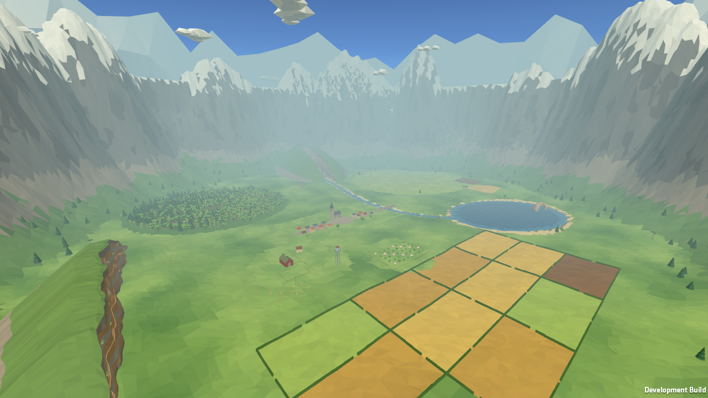
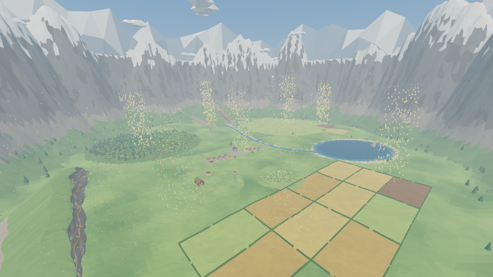

Captured locally · 4 October 2026
One valley. Two engines.
Compare the original Godot game with its Unity 6.6 recreation. The five world views share camera position, aim, resolution, and field of view. Unity now includes selective sun shadows, the original shadow-only tree meshes, and the rebuilt illustrated UI. Each view keeps its engine’s current materials, lighting, fog, and decoration.


Godot 4.7.2Unity 6.6
UnityGodot
Drag to compare. 1280 × 720 per engine · 70° vertical FOV · 4× MSAA · Godot Forward+ / Vulkan; Unity URP / Metal. World capture excludes NPCs and HUD.
Investigating Godot’s grey haze: original vs fog off, with separate tone-mapping controls
Matched camera tour
20 seconds, five four-second chapters, with the same camera motion in both engines. Silent, frame-sequence recordings at 30 fps.
Menu and first flight
These show each implementation’s native world-space UI and actual game scene. Input is scripted; the flight routes and timing differ. Both output 1280 × 720, with 90° vertical FOV in both engines. Godot’s harness explicitly selects its VR panel mode; Unity shows its curved VR panels through the desktop camera. The spawn views and scripted input paths differ.
Restored Unity interface
The settings, illustrated flight guide, and wing calibration use the original Nunito fonts and artwork. The illustration below is the Meta Quest Pro simulator mirror; the linked settings and hold views are desktop player captures. The progress bar confirms a held restart; a short press keeps the current run.
Shadow verification
These two captures use the same Unity village camera with the sun’s shadow setting enabled and disabled. The automated check confirms that the sun casts visible shadows.